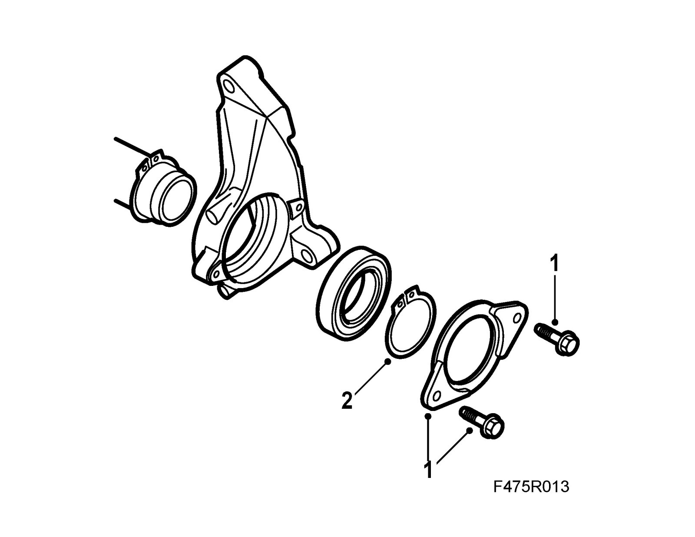
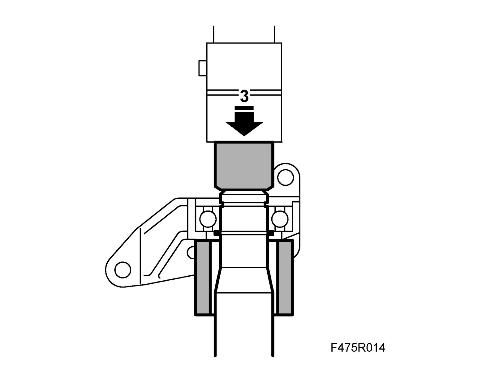
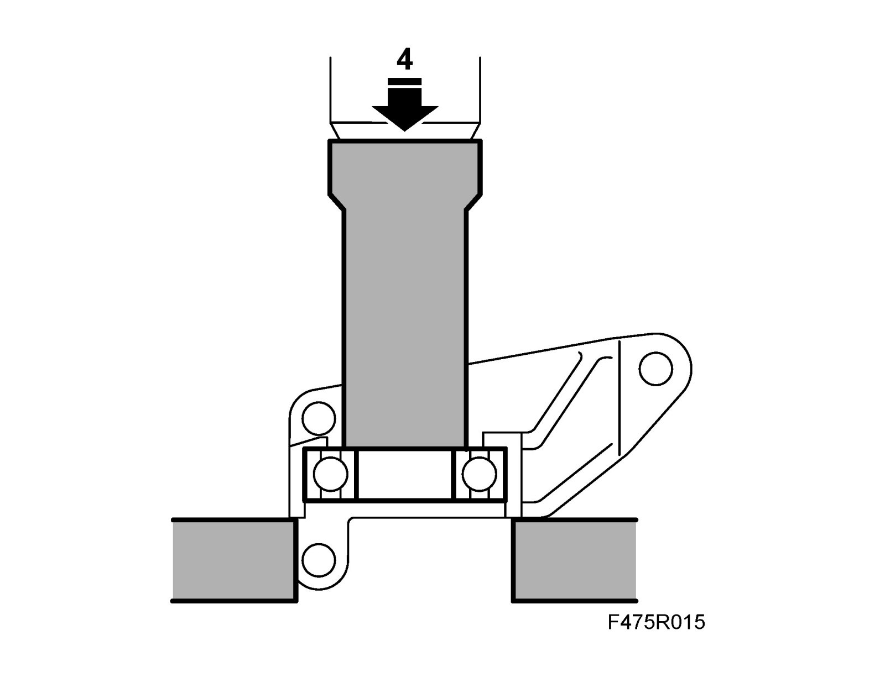
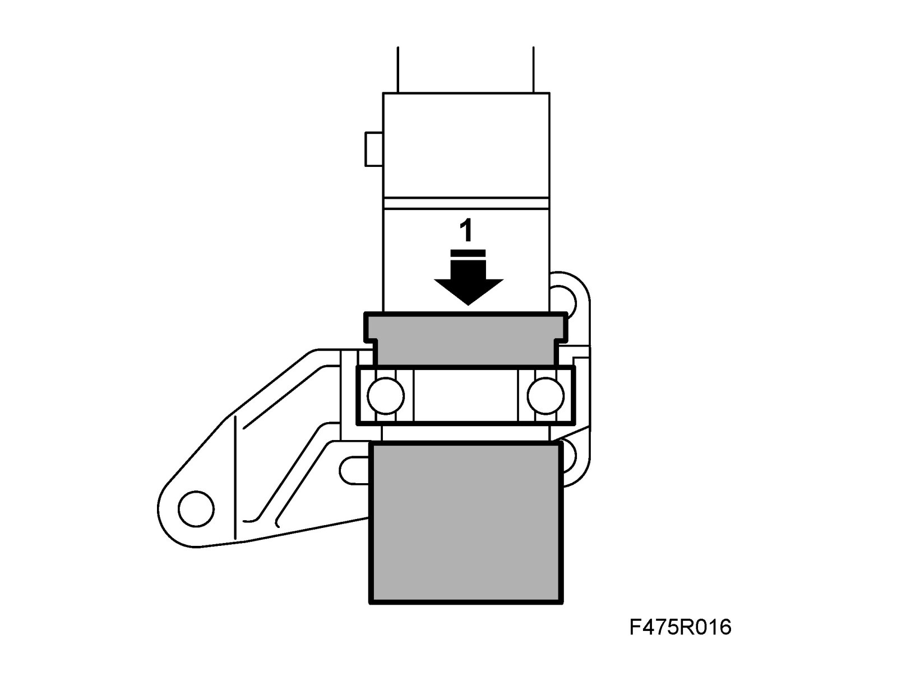
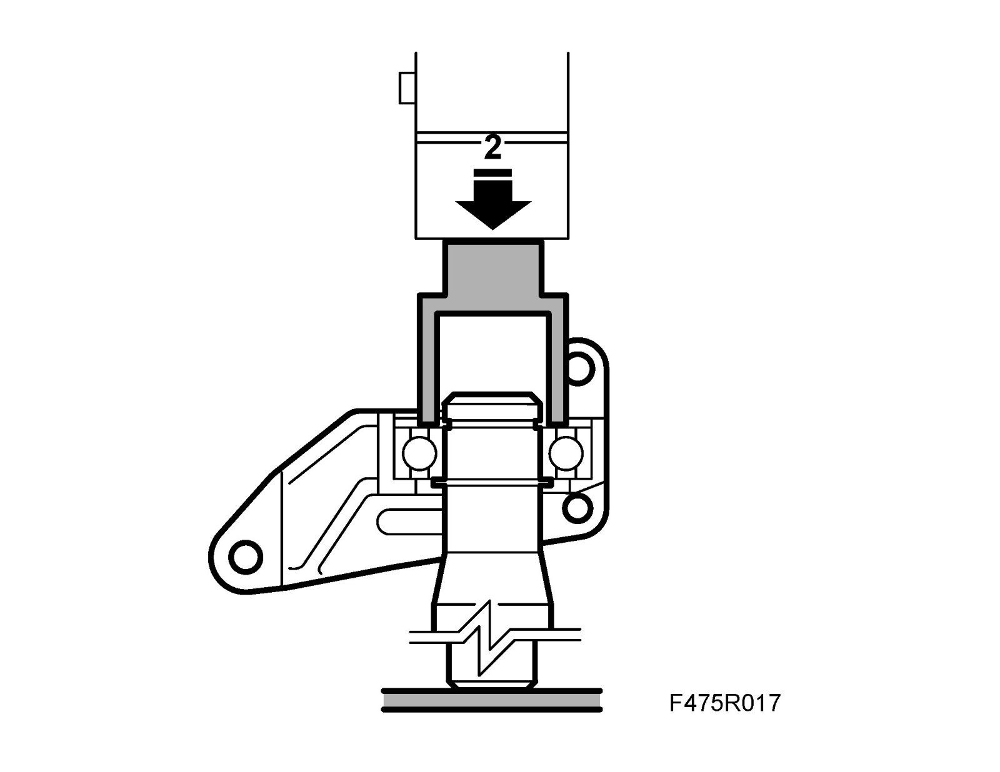
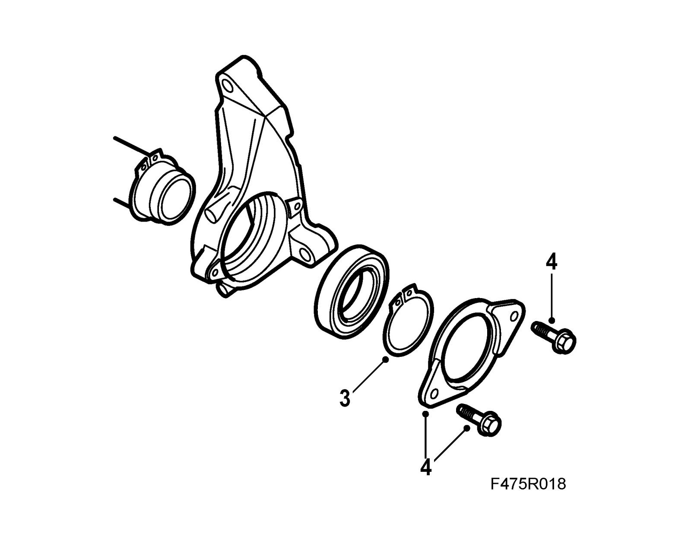

Axle Bearing: Service and Repair
Intermediate shaft bearing, 4-cyl petrolTo remove
1. Remove the bearing carrier.

2. Remove the small circlip.
3. Press the shaft out of the bearing in a hydraulic press using 87 92 210 Support, differential bearing and 87 90 859 Press sleeve.

4. Press out the bearing with 87 91 311 Sleeve, driver shaft bearing.

To fit
1. Press in the new bearing with 87 91 311 Sleeve, driver shaft bearing and 87 90 461 Sleeve, bearing ring for support.

2. Press on the intermediate shaft with 87 90 487 Sleeve, differential bearing.

3. Fit the circlip.

4. Fit the bearing carrier.
Tightening torque 10 Nm (7 lbf ft)